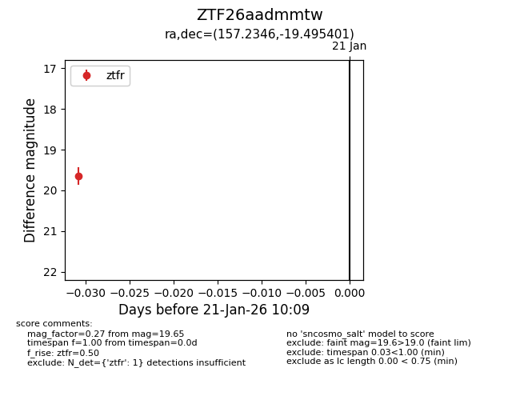
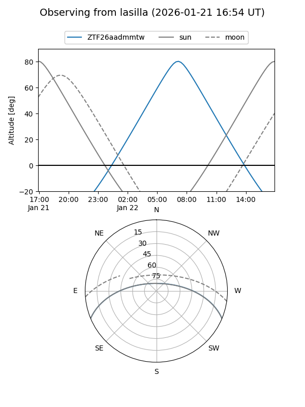
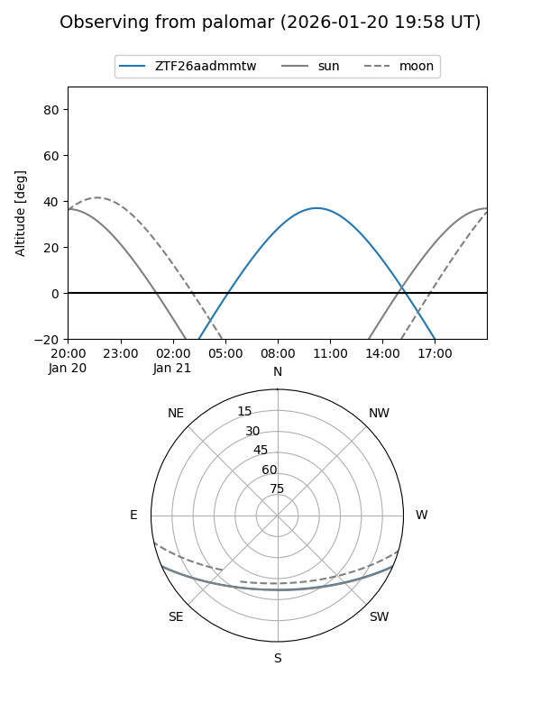

ZTF26aadmmtw
Target ZTF26aadmmtw at 2026-01-21 10:11
Aliases and brokers:
FINK: link
Lasair: link
ALeRCE: link
alt names
ZTF26aadmmtw (ztf,fink_ztf)
Coordinates:
equatorial (ra, dec) = 157.2346,-19.49540
equatorial (HMS+DMS) = 10:28:56.30,-19:29:43.44
galactic (l, b) = (262.5864,+31.99016)
Flags:
Photometry:
last ztfr=19.65
1 ztfr detections
Lightcurve

Visibility


Additional plots